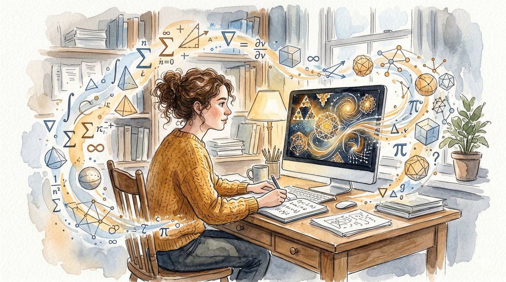
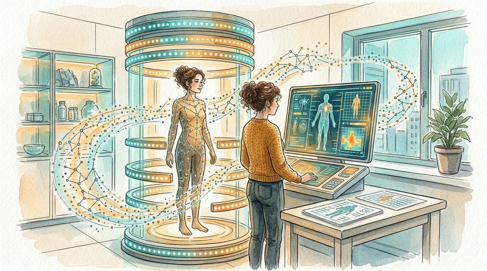
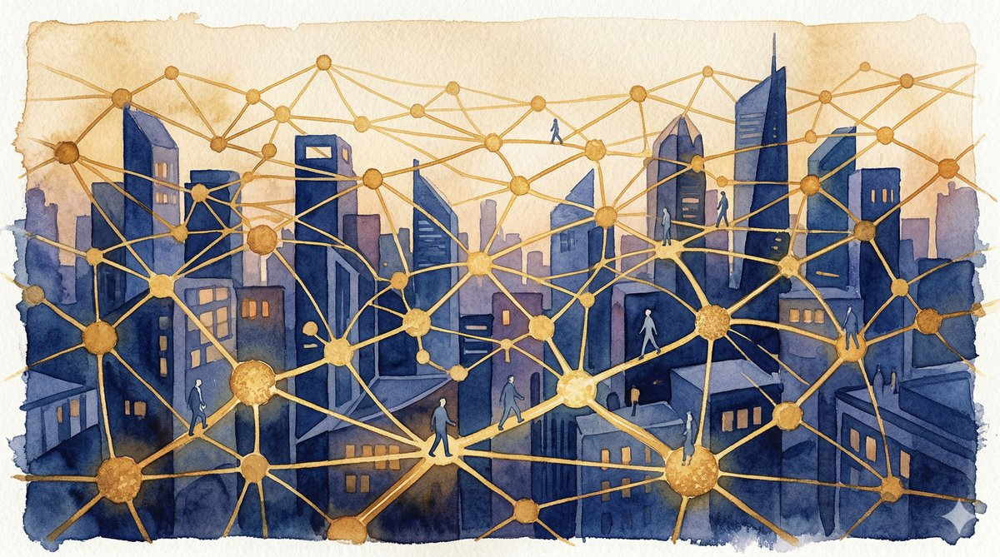

While the world argues about what artificial intelligence might destroy, a quieter revolution is underway. Five stories about the people putting AI to work—in mathematics, medicine, software, enterprise data, and the smallest machines ever made.
March 28, 2026 · 12 min read
There is a particular kind of noise that attends any technology capable of reshaping the world, and artificial intelligence has produced more of it than most. Scroll the headlines on any given morning in March 2026 and the picture is familiar: rogue AI, deepfake deceptions, a tech giant posting its worst quarter in two decades on AI fears. The debates are real and important. But they can obscure something happening at a lower frequency—quieter, more particular, more human in scale. People are building things. Not in the abstract, venture-capital-pitch sense of the word, but in the way a carpenter builds: joining what they know to what they need, with a tool that finally feels right in their hands.
This week's news, if you read past the alarm bells, offers a series of glimpses into what AI adoption actually looks like when it leaves the realm of speculative debate and enters the workshop. A twenty-four-year-old mathematician in Palo Alto has built a tool that runs on a single Mac and cracks problems that once required a supercomputer. A Spotify co-founder's body-scanning startup is racing to make preventive medicine as routine as a dental checkup. An entirely new kind of programmer—one who has never written a line of code—is building functional software over a cup of late-night coffee. The largest enterprise software company in Europe is spending billions to make the world's messiest corporate data legible to machines. And in a laboratory in Leiden, researchers have created microscopic robots that navigate without brains, sensors, or software of any kind.
These stories don't share a headline. But they share something deeper: a conviction that the most interesting thing about artificial intelligence is not what it threatens, but what it makes possible for the first time.

"Math is exploratory and experimental," says Axiom's founder. "Finding solutions is not all that mathematicians do."
I
The Mathematician's Apprentice
Carina Hong is twenty-four years old, a Stanford dropout, a winner of the Morgan Prize for undergraduate mathematics, and the CEO of a company valued at $1.6 billion. Her startup, Axiom Math, released a free tool this week called Axplorer, and it represents a quiet shift in how mathematical discovery might work for the next generation.
The backstory involves a hard problem in combinatorics called the Turán four-cycles problem, which asks how many edges you can draw between a given number of points without creating a cycle of length four. In 2024, a tool called PatternBoost, running on a supercomputing cluster at Meta, cracked the N=33 world record. The breakthrough was significant, but the tool was inaccessible—locked behind infrastructure that only a handful of institutions could afford.
What Hong and her team have done is compress that capability into something that runs on a Mac Pro. A problem that once required a supercomputer can now be attacked in two and a half hours for three dollars in cloud computing. The tool is open-source. You can download it.
A problem that once required a supercomputer can now be attacked in two and a half hours for three dollars in cloud computing.
But the significance of Axplorer isn't just about cost reduction. It's about what Hong describes as the exploratory dimension of mathematics. Mathematicians don't simply prove theorems; they conjecture, probe, generate examples and counterexamples, test intuitions against reality. AI can accelerate that experimental phase—not by replacing mathematical reasoning, but by giving researchers a tool that can generate vast numbers of candidate solutions, outlier constructions, and patterns that a human mind might take years to stumble upon alone. It is, in the best sense of the word, an apprentice: tireless, fast, and willing to try every door in the corridor while the mathematician decides which room to enter.
Hong has described her ambition as building a path toward mathematical superintelligence. The phrase is deliberately provocative, but the reality on the ground is more humble and more moving. A student with a laptop and an idea can now engage with the frontier of combinatorics in a way that was impossible two years ago. The gates, it turns out, were never supposed to be locked.

Neko Health's scanners collect more than fifty million data points in a single session—on skin, heart, vessels, and more.
II
The Body Electric
Daniel Ek made his fortune by convincing the music industry that people would pay for convenience. Now the Spotify co-founder is making a similar bet about the human body. His company, Neko Health, uses a 360-degree body scanner equipped with over seventy sensors to collect more than fifty million data points in a single session. The scanner reads skin, cardiovascular health, microcirculation, respiration—a comprehensive portrait of the body's current state, interpreted by a self-learning AI system that presents results to both doctors and patients.
This week, Bloomberg profiled Neko alongside a growing field of competitors in what might be called the body-scan economy. The company has conducted ten thousand scans in London and Stockholm, with a hundred thousand people on its waiting list. A US expansion, beginning in New York, is imminent. In its latest funding round, Neko raised $260 million at a valuation of $1.7 billion, making Ek the co-founder of two unicorns.
The medical establishment's reaction has been mixed. Some physicians worry about false positives, about the anxiety that comes from knowing too much too soon, about the conversion of healthy people into perpetual patients. These are legitimate concerns. But there is a counter-argument that deserves equal weight: we have built a medical system optimized for treating disease after it arrives, and the cost—human, financial, institutional—is staggering. What Neko and its peers are proposing is a shift in the temporal logic of medicine. Instead of waiting for symptoms, you look for patterns. Instead of reacting, you anticipate.
We have built a medical system optimized for treating disease after it arrives. What if we could look for patterns before symptoms appear?
AI makes this shift possible because the data involved is beyond the scale of human cognition. Fifty million data points per patient, cross-referenced against thousands of other scans, analyzed for correlations that no single physician could hold in mind. The AI doesn't replace the doctor—it gives the doctor something new: a chance to act before the crisis, to catch the shadow before it becomes the thing itself. If the model works, the implications ripple outward: fewer emergency interventions, lower insurance costs, longer and healthier lives. It is, in the most literal sense, a technology of care.
Over forty percent of code shipped at major companies is now AI-generated. But the real revolution is happening at kitchen tables.
III
The Vibe Coders
In early 2025, the AI researcher Andrej Karpathy coined a term for a new kind of programming. He called it "vibe coding"—a practice where you describe what you want to build in plain language and let an AI model write the code. The idea was playful, almost tongue-in-cheek. A year later, vibe coding was named Word of the Year, and Business Insider is reporting on couples where one partner stays up after the other falls asleep, building software with an AI agent the way someone else might tinker in a garage.
The statistics are startling. According to Google Cloud's AI Agent Trends report, over forty-one percent of code shipped at major companies is now AI-generated, up from less than five percent in 2023. More than eighty-four percent of developers in the latest Stack Overflow survey say they use or plan to use AI coding tools. But the most consequential shift may be among the people who never considered themselves developers at all: the lawyer building a contract analysis tool, the scientist constructing a data pipeline, the small business owner assembling an internal dashboard—all shipping real, functional software without becoming full-stack engineers.
This is not without complications. A December 2025 analysis found that AI-co-authored code contained roughly 1.7 times more significant issues than human-written code, with elevated rates of logic errors and security vulnerabilities. The code works; it does not always work well. There is a gap between building something and building something that endures.
The most consequential shift may be among the people who never considered themselves developers: the lawyer, the scientist, the small business owner—all shipping real software.
But the direction of travel is clear, and it is toward democratization. For decades, software has been a bottleneck: if you had an idea, you needed a developer to make it real, or you needed to become one yourself. Vibe coding doesn't eliminate the value of expertise—professional engineers remain essential for systems that must be robust, secure, and scalable. What it does is lower the threshold of participation. The kitchen-table coder, building something imperfect but useful at two in the morning, is a figure that would have been inconceivable five years ago. Now there are millions of them, and their number is growing.

SAP's acquisition of Reltio aims to create a single "golden record" from the chaos of enterprise data silos.
IV
The Golden Record
If the previous stories have a certain romance to them—the young mathematician, the midnight coder, the body illuminated by light—this one lives in the less glamorous but perhaps more consequential territory of enterprise plumbing. This week, SAP, the German software giant that serves as the nervous system for much of global commerce, announced its acquisition of Reltio, a cloud-native data management company. The deal is expected to close in the second or third quarter of 2026.
Reltio's specialty is what the industry calls master data management: the unglamorous but vital work of taking records from different systems—a customer's name spelled three different ways across five databases, a product cataloged with conflicting attributes, a supplier existing as both "Acme Corp" and "ACME Corporation"—and merging them into a single, reliable "golden record." Its AI-based entity resolution can identify and reconcile related records across formats and applications, creating a unified view where there was previously scattered noise.
Why does this matter? Because the promise of AI in business depends entirely on the quality of the data it has to work with. An AI agent tasked with managing a supply chain or analyzing customer behavior is only as good as the data it can access. If that data is fragmented, duplicated, contradictory, or stale, the agent will produce answers that are confidently wrong. SAP is making a bet that the next phase of enterprise AI adoption is not about building smarter models but about preparing the ground those models will stand on.
The vision is expansive: SAP intends to help customers expose master data as trusted, context-rich data products that serve both traditional analytics and the new generation of AI agents. The framework was developed collaboratively by over 120 research institutions, enterprises, and industry users. It is, in the best reading, an act of infrastructure—the kind of unsexy, foundational work that makes transformative applications possible later. The golden record is not an end in itself. It is the prerequisite for everything that comes next.
The robots are smaller than a human hair, yet they swim, sense, and navigate in ways that look surprisingly life-like.
V
The Smallest Machines
At Leiden University in the Netherlands, Professor Daniela Kraft and researcher Mengshi Wei have created something that blurs the line between machine and organism. Their microrobots—only a few tens of micrometres long, far smaller than the width of a human hair—can swim, sense, navigate, and adapt in ways that look, by any honest accounting, surprisingly alive. They have no sensors. They have no software. They have no brain. Their behavior emerges entirely from their shape and the way they interact with their environment.
When one of these robots encounters an obstacle, it automatically searches for another route. When two meet, they steer away from each other. These are not programmed responses; they are physical consequences of the robots' geometry and the fluid dynamics of their medium. The intelligence, such as it is, is embodied—built into the structure of the thing itself rather than imposed by an external controller.
Meanwhile, at Leipzig University, researchers have demonstrated a different approach: synthetic microrobots that autonomously navigate complex fluid flows by using their body shape as a sensor. Exposed to currents up to four times stronger than their own propulsion, these particles learn to navigate successfully within about fifty training sessions. And in China, the government has released the first national standard system for humanoid robots and embodied intelligence—a framework developed by over 120 institutions that establishes standards across the entire industrial chain, from brain-like computing to safety and ethics.
The intelligence is embodied—built into the structure of the thing itself rather than imposed by an external controller.
The biomedical possibilities are tantalizing: targeted drug delivery, minimally invasive diagnostics, microscopic surgical assistants that can navigate the bloodstream. But the conceptual implications may be even more significant. We have spent decades thinking of intelligence as something that lives in software—as code running on a chip. These microrobots suggest a different paradigm, one where intelligence is distributed, material, and emergent. The smallest machines are not running programs. They are running on physics. And they are showing us that the boundary between the built and the biological is thinner than we thought.
•
Coda
What connects a mathematician's desktop tool to a microrobot swimming through a cellular landscape? Not much, on the surface. But look at the shape of the thing—at the arc that runs from Carina Hong's Axplorer to Daniela Kraft's brainless swimmers—and a pattern emerges. In each of these stories, intelligence is being redistributed. From the supercomputer to the laptop. From the emergency room to the scanner. From the professional developer to the curious amateur. From the centralized database to the unified data product. From the silicon chip to the physical structure of a microscopic body.
This redistribution is not utopian. The vibe coder's software has bugs. The body scanner raises privacy questions. The enterprise data play involves vast sums of money flowing between corporations. The microrobots are years from clinical application. Every one of these stories comes with caveats, complications, and legitimate reasons for skepticism.
But skepticism is easy. Building is hard. And what is striking about this particular moment in the story of artificial intelligence is the sheer diversity of the building. A twenty-four-year-old poaching researchers from Meta. A Spotify billionaire staking his second fortune on preventive medicine. A person at a kitchen table, discovering at two a.m. that they can turn an idea into an application. An enterprise giant spending billions on the unsexy problem of data quality. A professor creating robots so small they navigate by shape alone.
The builders are not waiting for permission. They are not waiting for the debates to resolve, or for the regulations to arrive, or for certainty about what AI will become. They are building now, with what they have, toward what they can see. And what they can see, despite everything, is possibility.